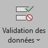

OAD & gestion de chevaux
1. Accroche & définition
-
Dans vos écuries / centres équestres / élevages, quels outils numériques sont utilisés pour aider à décider :
- qui / quand / avec quoi nourrir ?
- quand sortir au paddock ?
- suivre la santé / les soins ?
- gérer les cours / les chevaux ?
2. Panorama d’OAD “cheval”
| Type d’OAD équin | Exemple francophone | À quoi ça sert ? (phrase simple) |
| Gestion d’écurie / centre | Céléris, Equimodo, Kavalog, Smart Jack, Équitop Solutions, Mes-écuries.com, Equionline, Cavasoft | Gérer chevaux, cavaliers, plannings, factures, registres. |
| Suivi santé / quotidien chevaux | Valkae, Groomy, Equitazone, Ekiday | Centraliser soins, rendez-vous, poids, activité, rappels. |
| Bien-être / évaluation | Cheval Bien-Être (IFCE) | Évaluer le bien-être avec des indicateurs scientifiques. |
| Suivi orthopédique / locomotion | Hippotypose | Aider véto / maréchal à suivre l’orthopédie du cheval. |
Aujourd’hui, certains outils utilisent des capteurs et même de l’IA pour analyser le mouvement, repérer des anomalies, ou suivre le poulinage en continu.
Tous ces outils, qu’ils soient simples ou très modernes, font la même chose : ils récupèrent des données, appliquent des règles ou des modèles, et proposent des indicateurs ou une décision pour aider le gérant, l’éleveur ou le vétérinaire.
-
D'après vous:
- Quels avantages pour le gérant d’écurie ou l’éleveur ? (gain de temps, meilleure individualisation de la ration, suivi des soins, traçabilité…)
- Quels risques ou limites ? (dépendance aux outils, coût, besoin de données fiables, ne pas remplacer le jugement humain) Tout ça repose sur des règles, des modèles et des données. On va en faire une version simplifiée dans Excel pour un problème très concret d’écurie.
3. Choix du mini-OAD Excel
On va se mettre dans la peau d’un gérant d’écurie / centre équestre (Fictif bien sûr, je n'ai aucune vraie idée du fonctionnement de ce genre de centre).
Vous avez plusieurs chevaux en pension ou en club.
Pour chacun, régulièrement vous vous demandez :
- Est-ce que je dois augmenter la ration ?
- Est-ce que la ration est OK comme ça ?
- Ou au contraire, est-ce que je dois un peu réduire ?
Aujourd’hui, on va essayer de fabriquer un mini Outil d’Aide à la Décision dans Excel qui, à partir de quelques informations sur un cheval, va vous proposer :
- Augmenter la ration
- Ration OK
- Réduire la ration
-
On va regarder 4 critères :
- Le type de cheval : est-ce que c’est un poney rustique, un cheval “normal”, ou un cheval sensible / de sport ?
- Le niveau de travail : est-ce qu’il ne fait rien, un peu, moyen, ou beaucoup ?
- La note d’état corporel : en gros, est-ce qu’il est trop maigre, correct, ou trop gras ?
- L’évolution récente : est-ce qu’il perd, est-ce qu’il reste stable, ou est-ce qu’il prend du poids / de l’état ?
Intuitivement, vous ne vous dites pas ‘on augmente la ration’, hein ?
Maintenant, imaginez un cheval de sport sensible, qui travaille beaucoup, note 2 (un peu creux), et qui perd encore.
Là, on se dit plutôt : ‘Attention, il faut peut-être augmenter un peu la ration.’
Attention, ce qu’on va construire aujourd’hui dans Excel, ce n’est pas un logiciel de nutrition professionnelle, ce n’est pas un outil vétérinaire, c’est un mini-OAD pédagogique.
-
Le but, c’est de voir comment on passe :
- de critères observables sur le cheval
- à des scores et des calculs dans Excel
- puis à une décision simple : augmenter / OK / réduire
Les vrais OAD de nutrition équine prennent en compte beaucoup plus de paramètres (types de fourrage, analyses, maladie, âge, etc.) et sont souvent validés par des nutritionnistes.
Nous, aujourd’hui, on fait une version simplifiée pour comprendre le principe.
4. Construction du mini-OAD Excel “Gestion ration cheval”
Structurer la feuille
- Créez un document Excel nommé: "Exercice_OAD".
- Renommez la feuille active: "OAD_Ration_Cheval"
- Copiez le tableau suivant: (vous pouvez le copier-colle dans Excel, tout ce qui est entre paranthèses n'est pas à écrire, c'est à titre indicatif)
- Ajoutez une feuille à votre document
- Renommez cette feuille: "OAD_listes"
- Nous allons voir comment créer des listes déroulantes dans Excel:
-
Ajoutez le tableau suivant:
Score “type de cheval” :Type cheval Score Rustique -1 Standard 0 Sensible +1 -
Ajoutez le tableau suivant (à côté, en dessous, où vous voulez):
Score “niveau de travail” :Travail Score Repos -1 Léger 0 Modéré +1 Intense +2 -
Ajoutez le tableau suivant (à côté, en dessous, où vous voulez):
Score “NEC (note état corporel)”:NEC Score 1 ou 2 (trop maigre) +2 3 (correct) 0 4 ou 5 (trop gras) -2 -
Dernier tableau:
Évolution récente: Perd Stable Prend -
Retournez sur la première feuille et ajouter, en dessous du premier tableau, en sautant une ligne, le tableau suivant:
CALCUL & RÉSULTAT:
Les seuils sont à ajuster selon ce que vous voulez obtenir comme logiqueScore type cheval Score travail Score NEC Score évolution Score total Seuil “Augmenter” 3 Seuil “Réduire” -3 Décision sur la ration
| ENTRÉES CHEVAL | |
| Nom du cheval | (texte) |
| Type de cheval | (liste : Rustique / Standard / Sensible) |
| Niveau de travail | (liste : Repos / Léger / Modéré / Intense) |
| Note d’état corporel (1–5) | (liste ou saisie) |
| Évolution récente | (liste : Perd / Stable / Prend) |
Créer les listes
Pour créer une liste déroulante dans Excel, on utilise la fonctionnalité "Validation des données" qui se trouve dans le menu "Données".
-
Pour ce faire, vous allez:
- Dans la feuille "OAD_Ration_Cheval": sélectionnez la cellule où vous voulez créer la liste déroulante (B3, en face de "Type de cheval")
- Cliquez sur "Validation des données"  dans le menu "Données"
- Dans la liste déroulante "Autoriser:" sélectionnez "Liste"
- Dans "Source:", cliquez sur la petite flèche vers le haut
- Allez sur la feuille "OAD_listes" et sélectionnez les cellules de A2 à A5 (si vous avez fait comme moi, sinon, prennez le premier tableau sans le titre "Score 'type de cheval':")
- Validez en appuyant 2 fois sur la touche "Entré"
- Faites la même chose pour le reste du tableau de la feuille "OAD_Ration_Cheval"
- Vous devriez avoir 4 listes déroulantes pour remplir les cellules de votre tableau
Formules
Maintenant, on va remplir les cellules de la partie "CALCUL & RÉSULTAT" avec des formules.
- Dans la cellule B9, on va chercher le score correspondant au type de cheval, pour ce faire, on va utiliser la fonction RECHERCHEV
- La formule est la suivante : =RECHERCHEV(B3;OAD_listes!A3:B5;2;FAUX)
- Explications :
- B3 : la valeur à chercher (le type de cheval sélectionné)
- OAD_listes!A3:B5 : la plage où chercher (le tableau des types de cheval et leurs scores)
- 2 : le numéro de la colonne dans la plage où se trouve le score
- FAUX : pour une correspondance exacte
- Maintenant, chaque fois que l'on changera la valeur dans la liste déroulante, le score correspondant s'affichera automatiquement dans la cellule B9
- Faire pareil pour le score de travail et le score NEC
- Pour le "Score d'évolution", on va partir sur: =SI(B6="Perd";2;SI(B6="Prend";-2;0))
- Comme pour les listes précédantes, quand on change la valeur de la liste "Évolution récente", le score correspondant s'affichera automatiquement dans la cellule B12
- Le "Score total" sera la somme des scores du dessus: =SOMME(B9:B12)
-
-
La logique proposée ici est très simple et ne reflète pas la complexité réelle de la nutrition équine.
- Si le score est supérieur ou égal au seuil "Augmenter", on augmente la ration
- Si le score est inférieur ou égal au seuil "Réduire", on réduit la ration
- Si le score est entre les deux seuils, on laisse la ration inchangée
- La décision sur la ration est donc basée sur le score total et le seuil: =SI(B13>=B14;"Augmenter la ration";SI(B13<=B15;"Réduire la ration";"Ration OK"))
Mise en forme “outil”
- Mettre un titre en haut : “Mini OAD – Ajustement simplifié de la ration d’un cheval en pension”
- Colorer en léger les cellules à saisir
- Encadrer les cellules
-
Mise en forme conditionnelle sur la cellule de décision sur la ration:
-
Si:
- “Augmenter la ration” → fond orange
- “Ration OK” → fond vert
- “Réduire la ration” → fond rouge
5. Tests de cas & discussion
-
Testez votre mini-OAD avec différents types de chevaux et niveaux de travail, avec les cas suivants (et ceux que vous voulez):
- Cheval A : poney rustique au repos, NEC 4, prend du poids. -> Attendu : score plutôt négatif → Réduire la ration.
- Cheval B : cheval de sport sensible, travail intense, NEC 2, perd du poids. -> Attendu : score positif → Augmenter la ration.
- Cheval C : cheval standard en travail modéré, NEC 3, stable. -> Attendu : Ration OK.
-
Discussion :
- Est-ce que la décision vous semble cohérente ?
- Si on change un seuil (ex. Augmenter = 2), qu’est-ce que ça fait ?
- Quels sont les avantages d’un tel outil pour un gérant d’écurie ? (gain de temps, standardisation des décisions, aide à la réflexion)
- Quelles sont les limites de ce mini-OAD ? (simplification excessive, ne remplace pas l’expertise humaine, dépendance aux données saisies)
- Comment pourrait-on améliorer cet OAD ? (ajout de plus de critères, intégration de données réelles, validation par un expert en nutrition équine)